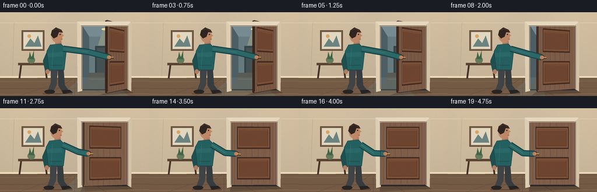
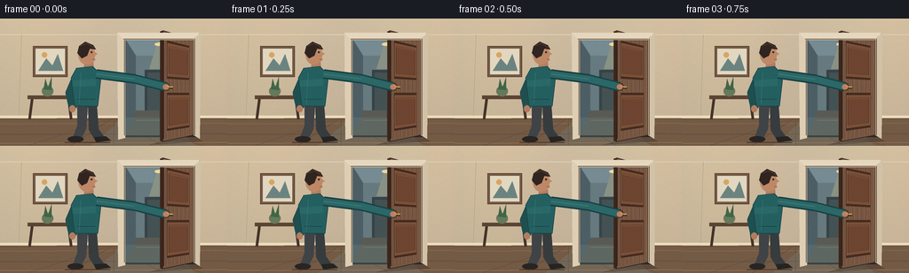

CODING AGENTS AS PIXEL WORLD MODELS
traex/GPT-5.6-Sol · motion_rationality_0041
点击播放 · 原生 RGB 像素
逐轮保存的候选
回放视频、检查图与代码变化。
每份候选均可单独播放。实际图片检查记录在下方工具轨迹中。
候选 01播放与检查图
点击播放 · 原生 RGB 像素


展开代码变化
--- 上一保存版本
+++ 本次保存版本
@@ -0,0 +1,242 @@
+from pathlib import Path
+import math
+import numpy as np
+from PIL import Image, ImageDraw
+import artifact_io
+
+# Deterministic, hand-rendered 2D animation of a person pulling a hinged door closed.
+W, H, N = 256, 144, 20
+S = 4
+SW, SH = W*S, H*S
+rng = np.random.default_rng(41)
+
+def scp(p):
+ return tuple(int(round(v*S)) for v in p)
+
+def poly(d, pts, fill, outline=None, width=1):
+ pp = [scp(p) for p in pts]
+ d.polygon(pp, fill=fill)
+ if outline:
+ d.line(pp + [pp[0]], fill=outline, width=max(1,int(width*S)), joint='curve')
+
+def line(d, pts, fill, width=1, joint='curve'):
+ d.line([scp(p) for p in pts], fill=fill, width=max(1,int(width*S)), joint=joint)
+
+def ellipse(d, box, fill, outline=None, width=1):
+ b = tuple(int(round(v*S)) for v in box)
+ d.ellipse(b, fill=fill, outline=outline, width=max(1,int(width*S)) if outline else 1)
+
+def rect(d, box, fill, outline=None, width=1):
+ b = tuple(int(round(v*S)) for v in box)
+ d.rectangle(b, fill=fill, outline=outline, width=max(1,int(width*S)) if outline else 1)
+
+def smoothstep(x):
+ x = min(1.0, max(0.0, x))
+ return x*x*(3-2*x)
+
+def render_frame(k):
+ t = k/(N-1)
+ # A short hold at the beginning and end makes the action read as intentional.
+ q = smoothstep((t-0.055)/0.79)
+ theta = math.radians(64.0*(1.0-q))
+ sn, cs = math.sin(theta), math.cos(theta)
+
+ # Warm room background, subtly shaded from ceiling to floor.
+ yy, xx = np.mgrid[0:SH, 0:SW]
+ y = yy/S
+ x = xx/S
+ wall_r = 194 + 16*(1-y/144) + 3*np.sin(x/31)
+ wall_g = 177 + 14*(1-y/144) + 2*np.sin(x/27)
+ wall_b = 151 + 10*(1-y/144)
+ arr = np.stack([wall_r, wall_g, wall_b], axis=2)
+ arr = np.clip(arr,0,255).astype(np.uint8)
+ im = Image.fromarray(arr, 'RGB')
+ d = ImageDraw.Draw(im)
+
+ # Ceiling line and soft wall divisions.
+ line(d, [(0,18),(256,18)], (221,207,181), 1)
+ line(d, [(24,18),(21,113)], (180,160,136), 0.7)
+ line(d, [(21,113),(137,113)], (225,209,180), 2)
+
+ # Floor and skirting, with restrained perspective cues.
+ poly(d, [(0,113),(256,112),(256,144),(0,144)], (116,91,70))
+ for yline, col in [(119,(135,107,80)),(131,(101,77,60)),(141,(146,113,82))]:
+ line(d, [(0,yline),(256,yline-1)], col, 1)
+ for bx in [31,79,128,183,230]:
+ line(d, [(128,112),(bx,144)], (91,70,56), .65)
+ line(d, [(0,111),(256,111)], (237,220,188), 3)
+ line(d, [(0,114),(256,113)], (103,78,61), 1)
+
+ # Framed print and slim console establish a furnished interior.
+ rect(d, (37,31,76,66), (117,91,70), (91,68,53), 1.2)
+ rect(d, (40,34,73,63), (226,215,192))
+ poly(d, [(43,59),(52,45),(59,53),(65,40),(71,59)], (108,132,128))
+ ellipse(d, (47,38,53,44), (217,165,96))
+ rect(d, (31,87,82,91), (92,68,52))
+ line(d, [(36,91),(33,114)], (70,52,43), 3)
+ line(d, [(77,91),(80,114)], (70,52,43), 3)
+ ellipse(d, (47,76,60,88), (102,121,91))
+ poly(d, [(49,80),(51,68),(54,78),(58,66),(58,81)], (64,102,70))
+
+ # Doorway opening and a cool, lit corridor beyond it.
+ rect(d, (137,19,221,134), (42,48,52))
+ # Corridor walls and far wall.
+ poly(d, [(141,23),(218,23),(204,42),(153,42)], (118,139,146))
+ poly(d, [(141,23),(153,42),(153,128),(141,132)], (77,94,101))
+ poly(d, [(218,23),(204,42),(204,128),(218,132)], (57,68,73))
+ rect(d, (153,42,204,128), (102,122,127))
+ # Far doorway and ceiling lamp.
+ rect(d, (163,58,195,128), (54,67,71))
+ rect(d, (166,61,192,128), (69,82,84))
+ ellipse(d, (174,27,187,31), (240,216,153))
+ poly(d, [(176,31),(185,31),(192,57),(168,57)], (137,146,132))
+ # Hall floor.
+ poly(d, [(153,104),(204,104),(218,132),(141,132)], (90,91,84))
+ line(d, [(180,104),(180,131)], (65,69,67), .8)
+ line(d, [(153,115),(207,115)], (116,112,99), .8)
+
+ # Light from the still-open part of the doorway fans across the room floor.
+ hinge_x = 217.5
+ door_w = 78.0
+ free_x = hinge_x - door_w*cs
+ free_top = (free_x, 23.0 - 10.5*sn)
+ free_bot = (free_x, 132.0 + 8.0*sn)
+ hinge_top, hinge_bot = (hinge_x,23.0), (hinge_x,132.0)
+ gap = max(0.0, free_x-140.0)
+ if gap > .4:
+ light = Image.new('RGBA',(SW,SH),(0,0,0,0)); ld=ImageDraw.Draw(light)
+ # narrows naturally as the door reaches its jamb
+ poly(ld, [(140,112),(free_x,112),(min(221,free_x+gap*.95),144),(102,144)], (126,174,176,38))
+ im = Image.alpha_composite(im.convert('RGBA'),light).convert('RGB'); d=ImageDraw.Draw(im)
+
+ # Moving floor shadow from the door leaf.
+ shadow = Image.new('RGBA',(SW,SH),(0,0,0,0)); sd=ImageDraw.Draw(shadow)
+ shadow_tip = (free_x-18*sn, 143)
+ poly(sd, [(free_bot[0],free_bot[1]-1),(hinge_bot[0],hinge_bot[1]),(229,139),shadow_tip], (35,25,20,68))
+ im = Image.alpha_composite(im.convert('RGBA'),shadow).convert('RGB'); d=ImageDraw.Draw(im)
+
+ # Door slab geometry. Local coordinate a=0 is latch edge, a=1 is hinge edge.
+ def mp(a,b):
+ lx = free_top[0]*(1-b)+free_bot[0]*b
+ ly = free_top[1]*(1-b)+free_bot[1]*b
+ rx = hinge_top[0]*(1-b)+hinge_bot[0]*b
+ ry = hinge_top[1]*(1-b)+hinge_bot[1]*b
+ return (lx*(1-a)+rx*a, ly*(1-a)+ry*a)
+
+ # Dark thickness along the approaching latch edge, prominent only while open.
+ edgeoff = 3.5*sn
+ poly(d, [(free_top[0]-edgeoff,free_top[1]+1),free_top,free_bot,(free_bot[0]-edgeoff,free_bot[1]-1)], (62,38,27))
+
+ slab_bright = int(92 + 18*cs)
+ slab = (slab_bright+14, slab_bright-13, slab_bright-30)
+ poly(d, [free_top,hinge_top,hinge_bot,free_bot], slab, (57,37,29), 1)
+
+ # Directional wood grain, clipped conceptually as narrow mapped strips.
+ for j in range(1,13):
+ a0=j/13
+ col = (128+(j%3)*3, 89+(j%2)*3, 63+(j%4))
+ poly(d, [mp(a0-.012,0.01),mp(a0+.012,0.01),mp(a0+.012,.99),mp(a0-.012,.99)], col)
+ for j in range(7):
+ a=.08+j*.13
+ pts=[]
+ for z in range(13):
+ b=.02+z*.08
+ aa=a+.008*math.sin(z*1.7+j)
+ pts.append(mp(aa,b))
+ line(d,pts,(83,53,39),.45)
+
+ # Raised upper and lower panels in perspective.
+ def panel(a0,b0,a1,b1):
+ outer=[mp(a0,b0),mp(a1,b0),mp(a1,b1),mp(a0,b1)]
+ poly(d,outer,(69,43,32))
+ ia=.025; ib=.022
+ inner=[mp(a0+ia,b0+ib),mp(a1-ia,b0+ib),mp(a1-ia,b1-ib),mp(a0+ia,b1-ib)]
+ poly(d,inner,(121,79,55), (159,108,73), .7)
+ core=[mp(a0+.055,b0+.05),mp(a1-.055,b0+.05),mp(a1-.055,b1-.05),mp(a0+.055,b1-.05)]
+ poly(d,core,(110,69,49), (78,48,36), .6)
+ line(d,[mp(a0+.06,b0+.055),mp(a1-.06,b0+.055)],(166,111,75),.6)
+ panel(.14,.08,.87,.43)
+ panel(.14,.56,.87,.91)
+
+ # Highlights on hinge side and latch edge make the rotation legible.
+ line(d,[mp(.975,.02),mp(.975,.98)],(167,117,81),.7)
+ line(d,[mp(.02,.025),mp(.02,.975)],(54,34,27),1.2)
+
+ # Brass lever and escutcheon follow the door surface.
+ handle = mp(.13,.505)
+ hx,hy=handle
+ ellipse(d,(hx-3.6,hy-4.3,hx+3.6,hy+4.3),(66,47,29))
+ ellipse(d,(hx-2.5,hy-3.1,hx+2.5,hy+3.1),(194,147,72),(238,193,103),.6)
+ # lever rotates slightly downward as latch is depressed late in the action
+ depress = math.sin(math.pi*min(1,max(0,(q-.72)/.28))) if q>.72 else 0
+ line(d,[(hx,hy),(hx+7.0,hy+1.1+1.5*depress)],(73,48,26),3.0)
+ line(d,[(hx,hy-.5),(hx+7.0,hy+.2+1.5*depress)],(213,163,78),1.7)
+
+ # Door casing in the room foreground overlays the slab correctly at full closure.
+ poly(d,[(132,16),(141,21),(141,135),(133,137)],(222,207,180))
+ line(d,[(140,22),(140,132)],(115,93,73),1)
+ poly(d,[(132,16),(224,16),(220,24),(140,24)],(230,216,191))
+ line(d,[(139,23),(219,23)],(122,99,77),1)
+ poly(d,[(218,22),(226,17),(225,136),(218,132)],(210,194,167))
+ line(d,[(219,23),(219,132)],(104,81,65),1)
+
+ # Person: small weight shift to the left while pulling the door shut.
+ shift = -1.7*q
+ # Legs and shoes (behind torso).
+ poly(d,[(87+shift,96),(99+shift,96),(97+shift,125),(91+shift,137),(81+shift,137),(87+shift,121)],(64,68,70))
+ poly(d,[(99+shift,97),(109+shift,98),(111+shift,125),(119+shift,136),(108+shift,139),(100+shift,126)],(55,60,63))
+ ellipse(d,(76+shift,133,94+shift,140),(41,37,34))
+ poly(d,[(106+shift,134),(119+shift,133),(125+shift,138),(108+shift,140)],(39,36,33))
+
+ # Far arm relaxed at side.
+ line(d,[(87+shift,63),(78+shift,84),(82+shift,102)],(32,79,80),9)
+ ellipse(d,(78+shift,98,85+shift,106),(178,125,96))
+
+ # Neck, torso and sweater folds.
+ poly(d,[(95+shift,49),(105+shift,49),(106+shift,59),(94+shift,60)],(180,126,97))
+ poly(d,[(86+shift,56),(104+shift,54),(114+shift,64),(110+shift,99),(84+shift,99),(80+shift,67)],(37,96,97), (26,66,68), .8)
+ poly(d,[(82+shift,70),(108+shift,68),(108+shift,76),(82+shift,77)],(42,105,104))
+ line(d,[(87+shift,91),(107+shift,91)],(28,74,77),1)
+ line(d,[(91+shift,61),(89+shift,96)],(61,120,116),.65)
+
+ # Head in right-facing profile.
+ ellipse(d,(88+shift,29,107+shift,52),(189,137,104))
+ # nose and chin profile
+ poly(d,[(104+shift,36),(110+shift,40),(106+shift,42),(107+shift,47),(102+shift,51),(96+shift,48),(97+shift,36)],(190,136,102))
+ # hair mass, with a tidy silhouette
+ poly(d,[(87+shift,39),(89+shift,31),(96+shift,26),(105+shift,30),(108+shift,35),(101+shift,34),(98+shift,42),(92+shift,45)],(48,37,32))
+ line(d,[(90+shift,31),(98+shift,28),(106+shift,33)],(75,53,42),1.3)
+ ellipse(d,(102+shift,37,104+shift,39),(42,35,31))
+ line(d,[(104+shift,46),(107+shift,46)],(124,73,65),.7)
+
+ # Active arm. It retracts and bends naturally as the handle moves left.
+ shoulder=(108.5+shift,62.5)
+ # A guided elbow path reads more naturally in this stylized projection than strict planar IK.
+ elbow=(151.0 + (129.0-151.0)*q + shift*.15,
+ 68.0 + (77.0-68.0)*q)
+ wrist=(hx-1.2,hy-.1)
+ # Sleeve shadow, then sleeve highlight.
+ line(d,[shoulder,elbow,wrist],(24,67,70),11)
+ line(d,[shoulder,elbow,wrist],(43,104,103),7.7)
+ line(d,[shoulder,elbow],(69,126,120),1.2)
+ ellipse(d,(wrist[0]-3.5,wrist[1]-3.2,wrist[0]+4.1,wrist[1]+3.7),(185,130,98),(116,77,61),.5)
+ # Fingers curl over the lever; their angle follows the hand.
+ line(d,[(wrist[0]+1,wrist[1]-1),(hx+5.3,hy+.7+depress)],(212,157,119),1.2)
+
+ # Contact shadow at feet and a tiny final latch seam.
+ line(d,[(73,140),(124,140)],(70,52,43),1.2)
+ if q>.96:
+ line(d,[(140.2,25),(140.2,131)],(50,34,28),.7)
+
+ # Downsample for smooth, cinematic edges and add subtle deterministic sensor grain.
+ im = im.resize((W,H),Image.Resampling.LANCZOS)
+ a=np.asarray(im).astype(np.int16)
+ local_rng=np.random.default_rng(900+k)
+ noise=local_rng.normal(0,0.65,(H,W,1))
+ a=np.clip(a+noise,0,255).astype(np.uint8)
+ return a
+
+frames = np.stack([render_frame(i) for i in range(N)],axis=0)
+assert frames.shape == (20,144,256,3) and frames.dtype == np.uint8
+artifact_io.save(frames, Path(__file__).resolve().parent)
+print('saved', frames.shape, frames.dtype)
可观测工具轨迹
实际执行的命令与返回图片。
命令 1exit 0
/bin/bash -lc "cat prompt.txt && printf '\\n--- GENERATION_RULES.md ---\\n' && cat GENERATION_RULES.md && printf '\\n--- task_spec.json ---\\n' && cat task_spec.json"
命令 2exit 1
/bin/bash -lc "find . -maxdepth 2 -type f -printf '%p\\n' | sort && printf '\\n--- tools ---\\n' && command -v ffmpeg && command -v python3 && python3 - <<'PY' mods=['cv2','numpy','PIL','moviepy','scipy'] for m in mods: try: x=__import__(m); print(m,'OK',getattr(x,'__version__','')) except Exception as e: print(m,'NO',e) PY"
命令 3exit 0
/bin/bash -lc 'cat artifact_io.py'
命令 4exit 0
/bin/bash -lc "python3 - <<'PY' mods=['cv2','numpy','PIL','imageio','scipy'] for m in mods: try: x=__import__(m); print(m,'OK',getattr(x,'__version__','')) except Exception as e: print(m,'NO',repr(e)) PY command -v ffmpeg || true command -v convert || true"
命令 5exit 0
/bin/bash -lc "cat > generate.py <<'PY'
from pathlib import Path
import math
import numpy as np
from PIL import Image, ImageDraw
import artifact_io
# Deterministic, hand-rendered 2D animation of a person pulling a hinged door closed.
W, H, N = 256, 144, 20
S = 4
SW, SH = W*S, H*S
rng = np.random.default_rng(41)
def scp(p):
return tuple(int(round(v*S)) for v in p)
def poly(d, pts, fill, outline=None, width=1):
pp = [scp(p) for p in pts]
d.polygon(pp, fill=fill)
if outline:
d.line(pp + [pp[0]], fill=outline, width=max(1,int(width*S)), joint='curve')
def line(d, pts, fill, width=1, joint='curve'):
d.line([scp(p) for p in pts], fill=fill, width=max(1,int(width*S)), joint=joint)
def ellipse(d, box, fill, outline=None, width=1):
b = tuple(int(round(v*S)) for v in box)
d.ellipse(b, fill=fill, outline=outline, width=max(1,int(width*S)) if outline else 1)
def rect(d, box, fill, outline=None, width=1):
b = tuple(int(round(v*S)) for v in box)
d.rectangle(b, fill=fill, outline=outline, width=max(1,int(width*S)) if outline else 1)
def smoothstep(x):
x = min(1.0, max(0.0, x))
return x*x*(3-2*x)
def render_frame(k):
t = k/(N-1)
# A short hold at the beginning and end makes the action read as intentional.
q = smoothstep((t-0.055)/0.79)
theta = math.radians(64.0*(1.0-q))
sn, cs = math.sin(theta), math.cos(theta)
# Warm room background, subtly shaded from ceiling to floor.
yy, xx = np.mgrid[0:SH, 0:SW]
y = yy/S
x = xx/S
wall_r = 194 + 16*(1-y/144) + 3*np.sin(x/31)
wall_g = 177 + 14*(1-y/144) + 2*np.sin(x/27)
wall_b = 151 + 10*(1-y/144)
arr = np.stack([wall_r, wall_g, wall_b], axis=2)
arr = np.clip(arr,0,255).astype(np.uint8)
im = Image.fromarray(arr, 'RGB')
d = ImageDraw.Draw(im)
# Ceiling line and soft wall divisions.
line(d, [(0,18),(256,18)], (221,207,181), 1)
line(d, [(24,18),(21,113)], (180,160,136), 0.7)
line(d, [(21,113),(137,113)], (225,209,180), 2)
# Floor and skirting, with restrained perspective cues.
poly(d, [(0,113),(256,112),(256,144),(0,144)], (116,91,70))
for yline, col in [(119,(135,107,80)),(131,(101,77,60)),(141,(146,113,82))]:
line(d, [(0,yline),(256,yline-1)], col, 1)
for bx in [31,79,128,183,230]:
line(d, [(128,112),(bx,144)], (91,70,56), .65)
line(d, [(0,111),(256,111)], (237,220,188), 3)
line(d, [(0,114),(256,113)], (103,78,61), 1)
# Framed print and slim console establish a furnished interior.
rect(d, (37,31,76,66), (117,91,70), (91,68,53), 1.2)
rect(d, (40,34,73,63), (226,215,192))
poly(d, [(43,59),(52,45),(59,53),(65,40),(71,59)], (108,132,128))
ellipse(d, (47,38,53,44), (217,165,96))
rect(d, (31,87,82,91), (92,68,52))
line(d, [(36,91),(33,114)], (70,52,43), 3)
line(d, [(77,91),(80,114)], (70,52,43), 3)
ellipse(d, (47,76,60,88), (102,121,91))
poly(d, [(49,80),(51,68),(54,78),(58,66),(58,81)], (64,102,70))
# Doorway opening and a cool, lit corridor beyond it.
rect(d, (137,19,221,134), (42,48,52))
# Corridor walls and far wall.
poly(d, [(141,23),(218,23),(204,42),(153,42)], (118,139,146))
poly(d, [(141,23),(153,42),(153,128),(141,132)], (77,94,101))
poly(d, [(218,23),(204,42),(204,128),(218,132)], (57,68,73))
rect(d, (153,42,204,128), (102,122,127))
# Far doorway and ceiling lamp.
rect(d, (163,58,195,128), (54,67,71))
rect(d, (166,61,192,128), (69,82,84))
ellipse(d, (174,27,187,31), (240,216,153))
poly(d, [(176,31),(185,31),(192,57),(168,57)], (137,146,132))
# Hall floor.
poly(d, [(153,104),(204,104),(218,132),(141,132)], (90,91,84))
line(d, [(180,104),(180,131)], (65,69,67), .8)
line(d, [(153,115),(207,115)], (116,112,99), .8)
# Light from the still-open part of the doorway fans across the room floor.
hinge_x = 217.5
door_w = 78.0
free_x = hinge_x - door_w*cs
free_top = (free_x, 23.0 - 10.5*sn)
free_bot = (free_x, 132.0 + 8.0*sn)
hinge_top, hinge_bot = (hinge_x,23.0), (hinge_x,132.0)
gap = max(0.0, free_x-140.0)
if gap > .4:
light = Image.new('RGBA',(SW,SH),(0,0,0,0)); ld=ImageDraw.Draw(light)
# narrows naturally as the door reaches its jamb
poly(ld, [(140,112),(free_x,112),(min(221,free_x+gap*.95),144),(102,144)], (126,174,176,38))
im = Image.alpha_composite(im.convert('RGBA'),light).convert('RGB'); d=ImageDraw.Draw(im)
# Moving floor shadow from the door leaf.
shadow = Image.new('RGBA',(SW,SH),(0,0,0,0)); sd=ImageDraw.Draw(shadow)
shadow_tip = (free_x-18*sn, 143)
poly(sd, [(free_bot[0],free_bot[1]-1),(hinge_bot[0],hinge_bot[1]),(229,139),shadow_tip], (35,25,20,68))
im = Image.alpha_composite(im.convert('RGBA'),shadow).convert('RGB'); d=ImageDraw.Draw(im)
# Door slab geometry. Local coordinate a=0 is latch edge, a=1 is hinge edge.
def mp(a,b):
lx = free_top[0]*(1-b)+free_bot[0]*b
ly = free_top[1]*(1-b)+free_bot[1]*b
rx = hinge_top[0]*(1-b)+hinge_bot[0]*b
ry = hinge_top[1]*(1-b)+hinge_bot[1]*b
return (lx*(1-a)+rx*a, ly*(1-a)+ry*a)
# Dark thickness along the approaching latch edge, prominent only while open.
edgeoff = 3.5*sn
poly(d, [(free_top[0]-edgeoff,free_top[1]+1),free_top,free_bot,(free_bot[0]-edgeoff,free_bot[1]-1)], (62,38,27))
slab_bright = int(92 + 18*cs)
slab = (slab_bright+14, slab_bright-13, slab_bright-30)
poly(d, [free_top,hinge_top,hinge_bot,free_bot], slab, (57,37,29), 1)
# Directional wood grain, clipped conceptually as narrow mapped strips.
for j in range(1,13):
a0=j/13
col = (128+(j%3)*3, 89+(j%2)*3, 63+(j%4))
poly(d, [mp(a0-.012,0.01),mp(a0+.012,0.01),mp(a0+.012,.99),mp(a0-.012,.99)], col)
for j in range(7):
a=.08+j*.13
pts=[]
for z in range(13):
b=.02+z*.08
aa=a+.008*math.sin(z*1.7+j)
pts.append(mp(aa,b))
line(d,pts,(83,53,39),.45)
# Raised upper and lower panels in perspective.
def panel(a0,b0,a1,b1):
outer=[mp(a0,b0),mp(a1,b0),mp(a1,b1),mp(a0,b1)]
poly(d,outer,(69,43,32))
ia=.025; ib=.022
inner=[mp(a0+ia,b0+ib),mp(a1-ia,b0+ib),mp(a1-ia,b1-ib),mp(a0+ia,b1-ib)]
poly(d,inner,(121,79,55), (159,108,73), .7)
core=[mp(a0+.055,b0+.05),mp(a1-.055,b0+.05),mp(a1-.055,b1-.05),mp(a0+.055,b1-.05)]
poly(d,core,(110,69,49), (78,48,36), .6)
line(d,[mp(a0+.06,b0+.055),mp(a1-.06,b0+.055)],(166,111,75),.6)
panel(.14,.08,.87,.43)
panel(.14,.56,.87,.91)
# Highlights on hinge side and latch edge make the rotation legible.
line(d,[mp(.975,.02),mp(.975,.98)],(167,117,81),.7)
line(d,[mp(.02,.025),mp(.02,.975)],(54,34,27),1.2)
# Brass lever and escutcheon follow the door surface.
handle = mp(.13,.505)
hx,hy=handle
ellipse(d,(hx-3.6,hy-4.3,hx+3.6,hy+4.3),(66,47,29))
ellipse(d,(hx-2.5,hy-3.1,hx+2.5,hy+3.1),(194,147,72),(238,193,103),.6)
# lever rotates slightly downward as latch is depressed late in the action
depress = math.sin(math.pi*min(1,max(0,(q-.72)/.28))) if q>.72 else 0
line(d,[(hx,hy),(hx+7.0,hy+1.1+1.5*depress)],(73,48,26),3.0)
line(d,[(hx,hy-.5),(hx+7.0,hy+.2+1.5*depress)],(213,163,78),1.7)
# Door casing in the room foreground overlays the slab correctly at full closure.
poly(d,[(132,16),(141,21),(141,135),(133,137)],(222,207,180))
line(d,[(140,22),(140,132)],(115,93,73),1)
poly(d,[(132,16),(224,16),(220,24),(140,24)],(230,216,191))
line(d,[(139,23),(219,23)],(122,99,77),1)
poly(d,[(218,22),(226,17),(225,136),(218,132)],(210,194,167))
line(d,[(219,23),(219,132)],(104,81,65),1)
# Person: small weight shift to the left while pulling the door shut.
shift = -1.7*q
# Legs and shoes (behind torso).
poly(d,[(87+shift,96),(99+shift,96),(97+shift,125),(91+shift,137),(81+shift,137),(87+shift,121)],(64,68,70))
poly(d,[(99+shift,97),(109+shift,98),(111+shift,125),(119+shift,136),(108+shift,139),(100+shift,126)],(55,60,63))
ellipse(d,(76+shift,133,94+shift,140),(41,37,34))
poly(d,[(106+shift,134),(119+shift,133),(125+shift,138),(108+shift,140)],(39,36,33))
# Far arm relaxed at side.
line(d,[(87+shift,63),(78+shift,84),(82+shift,102)],(32,79,80),9)
ellipse(d,(78+shift,98,85+shift,106),(178,125,96))
# Neck, torso and sweater folds.
poly(d,[(95+shift,49),(105+shift,49),(106+shift,59),(94+shift,60)],(180,126,97))
poly(d,[(86+shift,56),(104+shift,54),(114+shift,64),(110+shift,99),(84+shift,99),(80+shift,67)],(37,96,97), (26,66,68), .8)
poly(d,[(82+shift,70),(108+shift,68),(108+shift,76),(82+shift,77)],(42,105,104))
line(d,[(87+shift,91),(107+shift,91)],(28,74,77),1)
line(d,[(91+shift,61),(89+shift,96)],(61,120,116),.65)
# Head in right-facing profile.
ellipse(d,(88+shift,29,107+shift,52),(189,137,104))
# nose and chin profile
poly(d,[(104+shift,36),(110+shift,40),(106+shift,42),(107+shift,47),(102+shift,51),(96+shift,48),(97+shift,36)],(190,136,102))
# hair mass, with a tidy silhouette
poly(d,[(87+shift,39),(89+shift,31),(96+shift,26),(105+shift,30),(108+shift,35),(101+shift,34),(98+shift,42),(92+shift,45)],(48,37,32))
line(d,[(90+shift,31),(98+shift,28),(106+shift,33)],(75,53,42),1.3)
ellipse(d,(102+shift,37,104+shift,39),(42,35,31))
line(d,[(104+shift,46),(107+shift,46)],(124,73,65),.7)
# Active arm. It retracts and bends naturally as the handle moves left.
shoulder=(108.5+shift,62.5)
# A guided elbow path reads more naturally in this stylized projection than strict planar IK.
elbow=(151.0 + (129.0-151.0)*q + shift*.15,
68.0 + (77.0-68.0)*q)
wrist=(hx-1.2,hy-.1)
# Sleeve shadow, then sleeve highlight.
line(d,[shoulder,elbow,wrist],(24,67,70),11)
line(d,[shoulder,elbow,wrist],(43,104,103),7.7)
line(d,[shoulder,elbow],(69,126,120),1.2)
ellipse(d,(wrist[0]-3.5,wrist[1]-3.2,wrist[0]+4.1,wrist[1]+3.7),(185,130,98),(116,77,61),.5)
# Fingers curl over the lever; their angle follows the hand.
line(d,[(wrist[0]+1,wrist[1]-1),(hx+5.3,hy+.7+depress)],(212,157,119),1.2)
# Contact shadow at feet and a tiny final latch seam.
line(d,[(73,140),(124,140)],(70,52,43),1.2)
if q>.96:
line(d,[(140.2,25),(140.2,131)],(50,34,28),.7)
# Downsample for smooth, cinematic edges and add subtle deterministic sensor grain.
im = im.resize((W,H),Image.Resampling.LANCZOS)
a=np.asarray(im).astype(np.int16)
local_rng=np.random.default_rng(900+k)
noise=local_rng.normal(0,0.65,(H,W,1))
a=np.clip(a+noise,0,255).astype(np.uint8)
return a
frames = np.stack([render_frame(i) for i in range(N)],axis=0)
assert frames.shape == (20,144,256,3) and frames.dtype == np.uint8
artifact_io.save(frames, Path(__file__).resolve().parent)
print('saved', frames.shape, frames.dtype)
PY
python3 generate.py
ls -lh pixels.npz index.html inspection.png frames/00.png frames/19.png"命令 6exit 0
/bin/bash -lc 'sha256sum generate.py pixels.npz frames/00.png frames/19.png; python3 -m py_compile generate.py; test -s index.html && test -s inspection.png && test $(find frames -name '"'*.png' | wc -l) -eq 20 && echo 'artifact checks: PASS'"
命令 7exit 0
/bin/bash -lc "python3 - <<'PY'
import numpy as np, json
from PIL import Image
z=np.load('pixels.npz')['pixels']
print('stored tensor',z.shape,z.dtype)
fs=np.stack([np.array(Image.open(f'frames/{i:02d}.png')) for i in range(20)])
print('decoded frames',fs.shape,fs.dtype,'range',fs.min(),fs.max())
print('unique frame hashes',len({hash(f.tobytes()) for f in fs}))
mad=np.abs(np.diff(fs.astype(np.int16),axis=0)).mean((1,2,3))
print('adjacent mean abs deltas:',np.round(mad,2).tolist())
print('first-last MAD',round(float(np.abs(fs[0].astype(int)-fs[-1].astype(int)).mean()),2))
print('all RGB:', all(f.mode=='RGB' for f in map(Image.open,sorted(__import__('pathlib').Path('frames').glob('*.png')))))
# map expected moving latch trajectory to verify clear leftward closing motion
for i in [0,3,7,11,15,19]:
t=i/19; u=min(1,max(0,(t-.055)/.79)); q=u*u*(3-2*u)
import math
x=217.5-78*math.cos(math.radians(64*(1-q)))
print(f'frame {i:02}: closure {q:.3f}, latch edge x={x:.1f}')
PY"保存候选 1 份；完成命令 7 次；可验证图片返回 0 张。原始 API 响应与完整日志保留在本地。